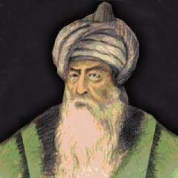
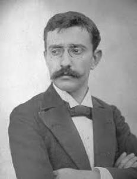

Türk-İslam Dünyası astronomi ve matematik alimleri arasında, ortaya koyduğu eserleriyle haklı bir şöhrete sahip Ali Kuşçu, Osmanlı Türklerinde, astronominin önde gelen bilgini sayılır. "Batı ve Doğu Bilim dünyası onu 15. yüzyılda yetişen müstesna bir alim olarak tanır." Öyle ki; müsteşrik W. Barlhold, Ali Kuşcu'yu "On Beşinci Yüzyıl Batlamyos'u" olarak adlandırmıştır. Babası, Uluğ Bey'in kuşcu başısı (doğancıbaşı) idi. Kuşçu soyadı babasından gelmektedir. Asıl adı Ali Bin Muhammet'tir. Doğum yeri Maveraünnehir bölgesi olduğu ileri sürülmüşse de, adı geçen bölgenin hangi şehrinde ve hangi yılda doğduğu kesinlikle bilinmektedir.
Türk-İslam Dünyası astronomi ve matematik alimleri arasında, ortaya koyduğu eserleriyle haklı bir şöhrete sahip Ali Kuşçu, Osmanlı Türklerinde, astronominin önde gelen bilgini sayılır. "Batı ve Doğu Bilim dünyası onu 15. yüzyılda yetişen müstesna bir alim olarak tanır." Öyle ki; müsteşrik W. Barlhold, Ali Kuşcu'yu "On Beşinci Yüzyıl Batlamyos'u" olarak adlandırmıştır. Babası, Uluğ Bey'in kuşcu başısı (doğancıbaşı) idi. Kuşçu soyadı babasından gelmektedir. Asıl adı Ali Bin Muhammet'tir. Doğum yeri Maveraünnehir bölgesi olduğu ileri sürülmüşse de, adı geçen bölgenin hangi şehrinde ve hangi yılda doğduğu kesinlikle bilinmektedir.
 1910 yılında Selanik'te doğdu. Yüksek öğrenimini Fransa'da Ecole Normale Superieure'de tamamladı (1932). Bir süre Galatasaray Lisesi'nde matematik öğretmenliği yaptıktan sonra İstanbul Üniversitesi Fen Fakültesi'nde doçent adayı olarak çalıştı. Doktorasını yapmak için Almanya'ya gitti. 1938 yılında Göttingen Üniversitesi'nde doktorasını bitirdi. Yurda döndüğünde İstanbul Üniversitesi Fen Fakültesi'nde profesör ve ordinaryus profersörlüğe yükseldi. Burada 1962 yılına kadar çalıştı. Daha sonra Robert Koleji'nde Matematik dersleri vermeye başladı. 1964 yılında Türkiye Bilimsel ve Teknik Araştırma Kurumu (TÜBİTAK) bilim kolu başkanı oldu.
1910 yılında Selanik'te doğdu. Yüksek öğrenimini Fransa'da Ecole Normale Superieure'de tamamladı (1932). Bir süre Galatasaray Lisesi'nde matematik öğretmenliği yaptıktan sonra İstanbul Üniversitesi Fen Fakültesi'nde doçent adayı olarak çalıştı. Doktorasını yapmak için Almanya'ya gitti. 1938 yılında Göttingen Üniversitesi'nde doktorasını bitirdi. Yurda döndüğünde İstanbul Üniversitesi Fen Fakültesi'nde profesör ve ordinaryus profersörlüğe yükseldi. Burada 1962 yılına kadar çalıştı. Daha sonra Robert Koleji'nde Matematik dersleri vermeye başladı. 1964 yılında Türkiye Bilimsel ve Teknik Araştırma Kurumu (TÜBİTAK) bilim kolu başkanı oldu.

Türk, minyatürcü. Ayrıca matematik ve tarih konularında kitaplar da yazmış çok yönlü bir bilgindir.
Doğum tarihi ve yeri bilinmiyor. Kâtip Çelebi ölüm tarihi olarak 1533'ü vermekteyse de, bunun doğru olmadığı bugün kesinleşmiştir. Çeşitli kaynaklarda onun 1547'den, 1551'den, 1553'ten sonra ölmüş olabileceği ileri sürülmektedir. Yaşamı üstüne bilgi de yok denecek kadar azdır. Saraybosna yakınlarında doğduğuna, dedesinin devşirme olduğuna ilişkin kesinleşmemiş ipuçları vardır.
Enderun'da okumuştur. Matrakçı ya da Matrakî adıyla anılması, lobotu andıran sopalarla oynandığı ve eskrime benzeyen bir tür savaş oyunu olduğu bilinen "matrak" oyununda çok usta olmasından ve belki de bu oyunun mucidi bulunmasından ileri gelmektedir.

XIX. yüzyılın ikinci yarısında yetişmiş, değerli eserler vererek, 57 yaşında hayata gözlerini kapamış, bir ilim ve fikir adamıdır. Salih Zeki Bey, 1864 yılında İstanbul'da doğmuştur. Ortaöğrenimini Darüşşafaka'da görmüş, yüksek öğrenimini Paris'te elektirk mühendisliği bölümünü bitirmiştir.
Salih Zeki, Darüşşafaka ve Mühendis Mektebi'nde matematik ve fizik dersleri okutmuştur. Daha sonraki çalışmalarının tümünü üniversiteye vermiştir. Bugünkü gerçek üniversitenin kurucusu salih Zeki'dir. Türkiye'ye, matematik, fizik ve fen derslerini batılı yöntemleriyle ilk getiren odur. Birçok gazete ve dergide çıkan güzel yazılarıyla Türk gençliğini edebiyat kadar matematiğe yönelten ve matematiği sevdiren yine o olmuştur.
 Asıl adı Giyaseddin Ebu'l Feth Bin İbrahim El Hayyam'dır. 18 Mayıs 1048'de İran'ın Nişabur kentinde doğan Ömer Hayyam bir çadırcının oğluydu. Çadırcı anlamına gelen soyadını babasının mesleğinden almıştır. Fakat o soyisminin çok ötesinde işlere imza atmıştır.Daha yaşadığı dönemde İbn-i Sina'dan sonra Doğu'nun yetiştirdiği en büyük bilgin olarak kabul ediliyor-du. Tıp, fizik, astronomi, cebir, geometri ve yüksek matematik alanlarında önemli çalışmaları olan Ömer Hayyam için zamanın bütün bilgilerini bildiği söylenirdi. O herkesten farklı olarak yaptığı çalışmaların çoğunu kaleme almadı, oysa O ismini çokça duyduğumuz teo-remlerin isimsiz kahramanıdır. Elde bulunan ender kayıtlara dayanılarak Ömer Hayyam'ın çalışmaları şöyle sıralanabilir:
Asıl adı Giyaseddin Ebu'l Feth Bin İbrahim El Hayyam'dır. 18 Mayıs 1048'de İran'ın Nişabur kentinde doğan Ömer Hayyam bir çadırcının oğluydu. Çadırcı anlamına gelen soyadını babasının mesleğinden almıştır. Fakat o soyisminin çok ötesinde işlere imza atmıştır.Daha yaşadığı dönemde İbn-i Sina'dan sonra Doğu'nun yetiştirdiği en büyük bilgin olarak kabul ediliyor-du. Tıp, fizik, astronomi, cebir, geometri ve yüksek matematik alanlarında önemli çalışmaları olan Ömer Hayyam için zamanın bütün bilgilerini bildiği söylenirdi. O herkesten farklı olarak yaptığı çalışmaların çoğunu kaleme almadı, oysa O ismini çokça duyduğumuz teo-remlerin isimsiz kahramanıdır. Elde bulunan ender kayıtlara dayanılarak Ömer Hayyam'ın çalışmaları şöyle sıralanabilir:
 İstanbul Yüksek Mühendis mektebi'ni bitirdikten (1914) sonra Berlin Üniversitesi'nde Albert Einstein'in yanında doktorasını yaptı (1919). Türkiye'ye dönünce, bitirdiği okulda öğretim ü-yesi olarak çalışmaya başladı. Üniversite reformunu hazırlayan kurulda yer aldı. Yeni kurulan İstanbul Üniversitesi Fen Fakültesi'nde analiz profesörü ve dekan olduğu gibi Yüksek Mühendis Mektebi'nde de ders vermeye devam etti. Yüksek Mühendis Mektebi İstanbul Teknik Üniversitesi'ne dönüştürülünce buradan ayrıldı ve yalnızca İstanbul Üniversitesi'nde çalış-maya devam etti. Daha sonra burada ordinaryüs profesör oldu. 1948 yılında Fen Fakültesi Dekanlığı'na getirildi.
İstanbul Yüksek Mühendis mektebi'ni bitirdikten (1914) sonra Berlin Üniversitesi'nde Albert Einstein'in yanında doktorasını yaptı (1919). Türkiye'ye dönünce, bitirdiği okulda öğretim ü-yesi olarak çalışmaya başladı. Üniversite reformunu hazırlayan kurulda yer aldı. Yeni kurulan İstanbul Üniversitesi Fen Fakültesi'nde analiz profesörü ve dekan olduğu gibi Yüksek Mühendis Mektebi'nde de ders vermeye devam etti. Yüksek Mühendis Mektebi İstanbul Teknik Üniversitesi'ne dönüştürülünce buradan ayrıldı ve yalnızca İstanbul Üniversitesi'nde çalış-maya devam etti. Daha sonra burada ordinaryüs profesör oldu. 1948 yılında Fen Fakültesi Dekanlığı'na getirildi.